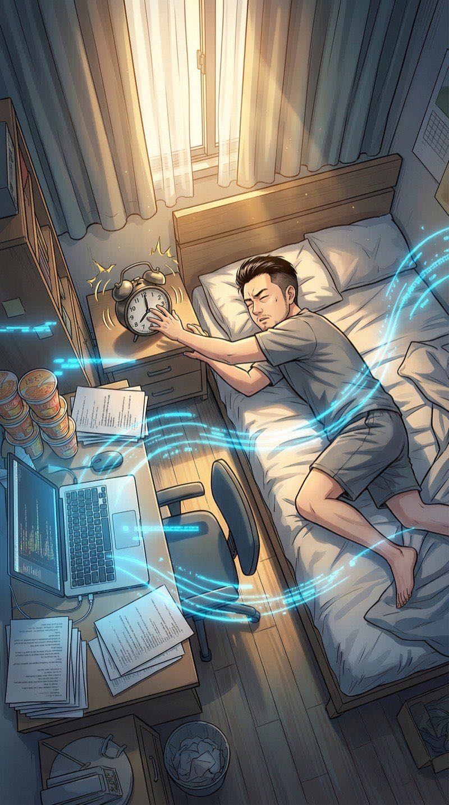
闹钟响了。阳光从窗帘缝隙钻进来，落在散了一桌的打印纸和泡面桶上。
昨晚……是做梦吗？
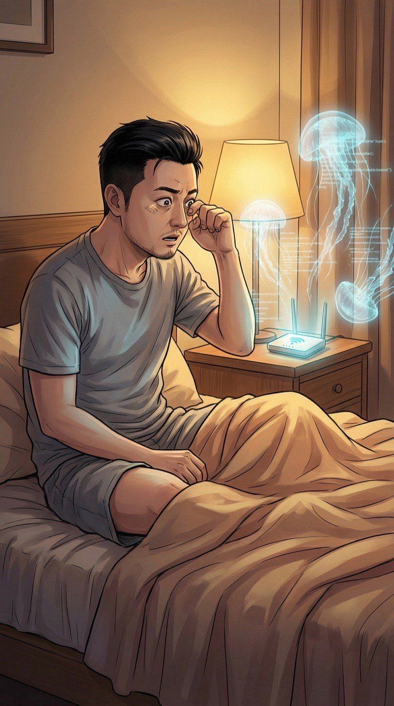
我揉了揉眼睛坐起来。然后——空气中突然闪现一片淡蓝色的光。WiFi路由器发出的数据包像水母一样在房间里飘浮。
"卧槽……真的？！"
我的WiFi密码……居然是明文？换密码这事拖了半年，终于有动力了。
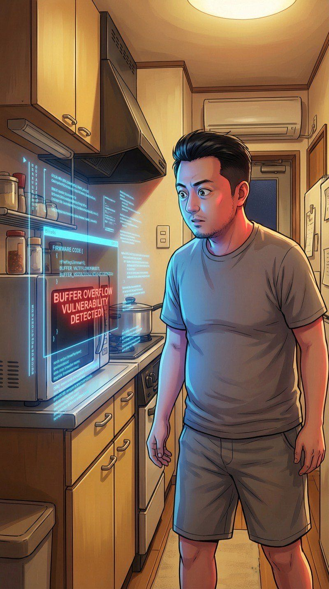
走进厨房。看向微波炉的瞬间，它的固件代码浮现了——其中有一段闪着红光。
我的微波炉有安全漏洞？谁要黑我微波炉？加热个泡面还能被远程控制不成？
拿起手机。APP的代码架构像3D建筑一样浮现。哪些是广告SDK、哪些是数据追踪，一目了然。
外卖APP追踪了我14个传感器？好家伙，比我前女友还关心我。
看向书架上的智能音箱。数据流显示——它正在后台录音。
难怪我说了一句"饿了"，它就给我推外卖广告！原来你一直在听！
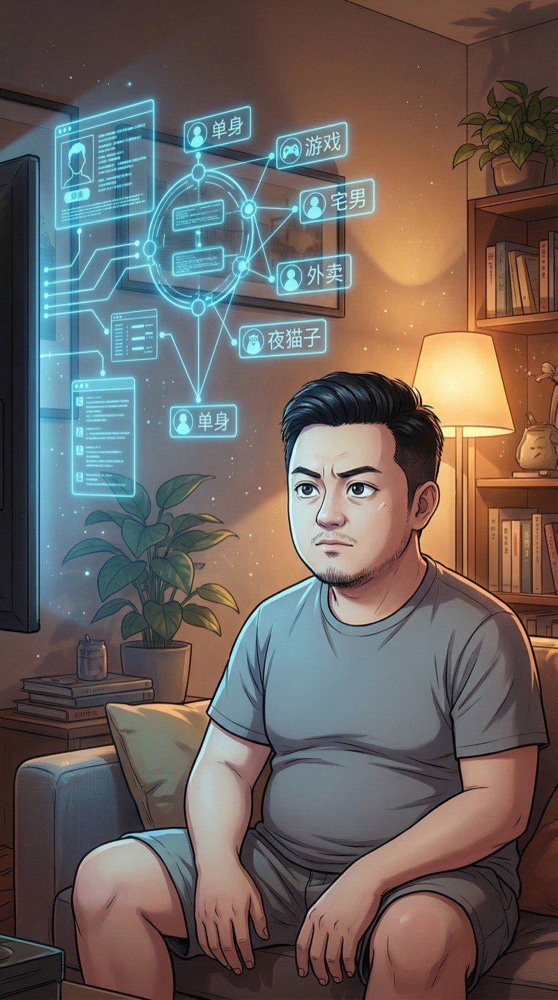
看向电视。视频平台的推荐算法可视化了——我的用户画像标签一目了然。
太准了，气死。连泡面都被你记下来了。
站到镜子前，看向自己。
什么都没有。身上没有数据流，脑子里的想法也看不到。代码视觉只能看到"系统"，看不到人的心思。
看不到人的心思……好吧，这不是读心术。是纯粹的——代码视觉。
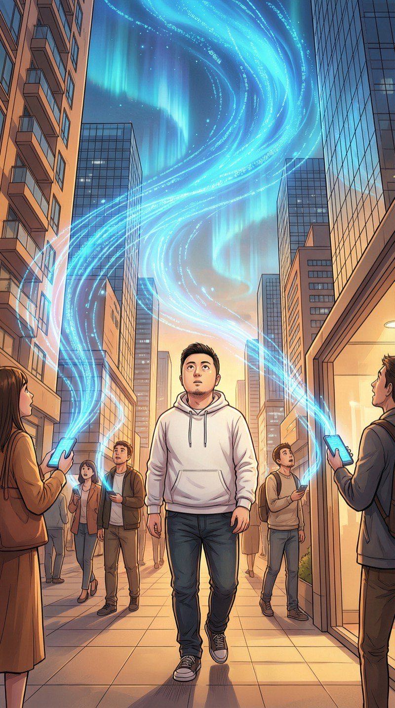
一出门——整个世界变了。
街上每个人的手机都在发射数据流，汇聚成一条条光带，在头顶交织成一片数据的海洋。
我的天……
数据流像极光一样在头顶飘。每个人的手机像萤火虫，不停发射和接收。
整个城市就是一个巨大的数据海洋……我以前一直在海底，现在突然能看到水面了。
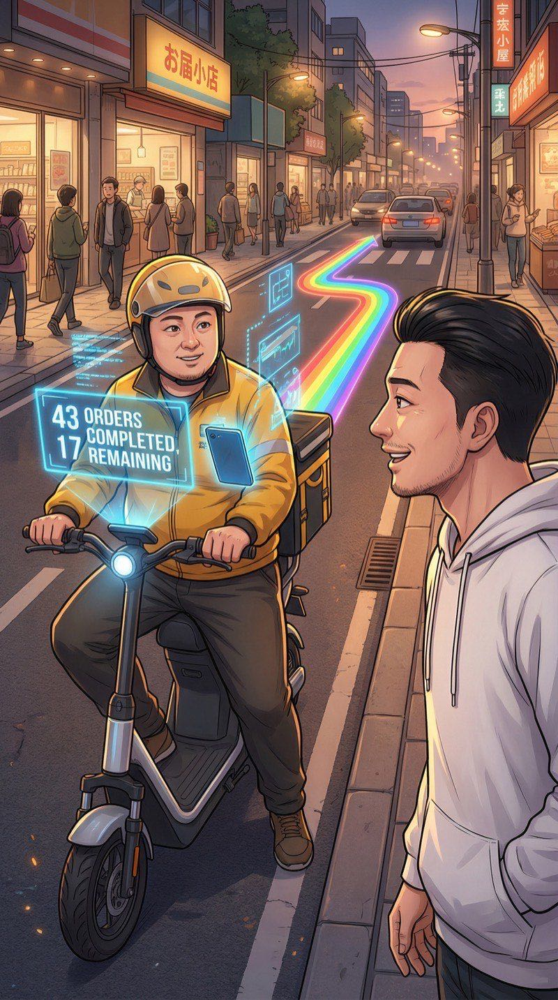
一个外卖骑手骑着电动车从我身边呼啸而过。他手机的数据流清晰可见——
43单了还在送……兄弟你比我创业还拼。
路边长椅上，一个女生在疯狂地给一个叫"陈不凡"的男生发消息。
别发了姐妹……他真的不喜欢你。（我不敢说出口）
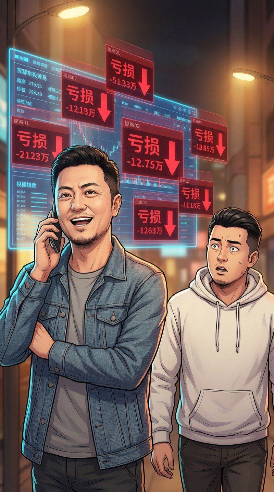
一个大叔经过，正在打电话。他手机里的炒股APP数据流一目了然——
大叔（打电话）："没事儿，今天又赚了！"
大叔，你的屏幕和你的嘴巴说的不一样……
路过一家咖啡馆时，我停下了脚步。
咖啡馆的收银系统传出一段异常数据流——不是正常的蓝色，而是刺眼的红。闪烁、锯齿状，像一条毒蛇。
等等……这不对。
代码视觉自动放大。恶意代码的注入路径清晰可见——从WiFi进入，利用一个零日漏洞，实时窃取客户信用卡信息。
零日漏洞……这个手法很专业。不是脚本小子，是有组织的。
我走进咖啡馆，找了个位子坐下，掏出笔记本电脑，假装工作。
我："一杯美式，谢谢。"
先别打草惊蛇。
打开终端——但其实不需要。代码视觉已经让我"看到"了整个攻击链路。
恶意代码每10秒上传一次窃取的卡号数据，到一个境外服务器。
每10秒一次……已经运行了至少三天。
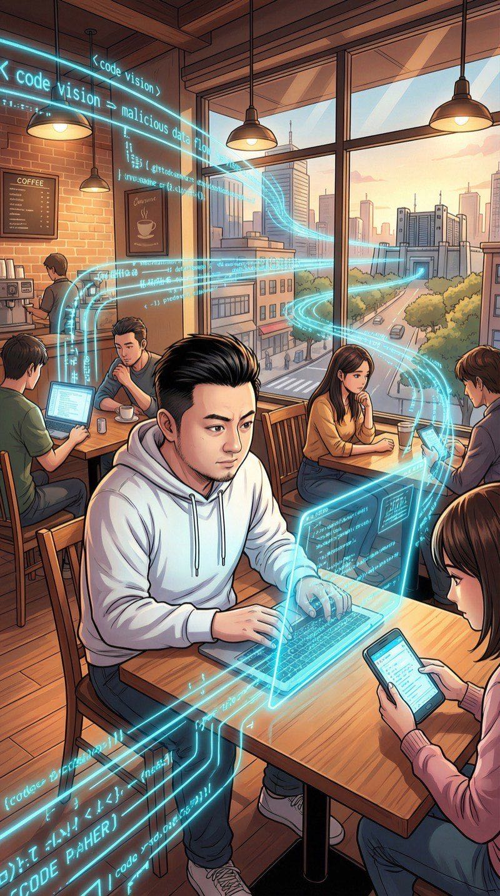
代码视觉追踪数据流的去向——穿过墙壁、楼层、整栋大楼，最终汇聚到3公里外的一个数据中心。
目标锁定。
我掏出手机，犹豫了一下。
报警？警察不会相信"我用超能力看到你们被黑了"。自己修？这不是我的系统……但如果不管，每天有几百人的信用卡信息在被偷。
嘴角不自觉地翘了起来——黑客的笑容。
"算了……什么报不报警的，先把漏洞补上再说。这是手艺人的本能。"
代码视觉中，恶意数据流逐渐减弱、断裂、消失。漏洞被补上了。
周围的顾客们悠闲地喝着咖啡，没有人知道刚才发生了什么。
搞定。虽然是非法入侵……但拯救了未来三天要来这喝咖啡的几百个人的钱包。功过相抵？大概吧。
鼻子突然一热。一滴血滴了下来。
"操……头好痛。"
代码视觉过载的第一次代价。
回公司的路上，代码视觉变得模糊、闪烁——像信号不好的电视。
有使用上限……大概连续高强度使用2小时就到极限了。需要休息。
推开玻璃门。"深圳梦码科技有限公司"——我的创业小窝，三个工位，负债200万。
小陈已经在工位上了，戴着耳机敲代码。看到我进来，她摘下耳机，皱了皱眉。
小陈："江哥，你脸色好差……昨晚又通宵了？"
我："没事，就是昨晚服务器炸了修了一宿。"
小陈："炸了？！你怎么不叫我！"
我："你不是在赶那个推荐算法的deadline吗。"
她瞪了我一眼，但没再追问。
小陈回到工位继续敲代码。我偷偷激活代码视觉看她的屏幕——她正在写一个推荐算法，但有一个内存泄漏bug。
直接告诉她会暴露我的秘密。
我假装"刚好路过"看了一眼她的屏幕。
我："小陈，你那个for循环里的数组好像没release啊。"
小陈（震惊）："你怎么一眼就看出来了？！"
我："呃……直觉？"
小陈推了推圆框眼镜："你上辈子是编译器吗？"
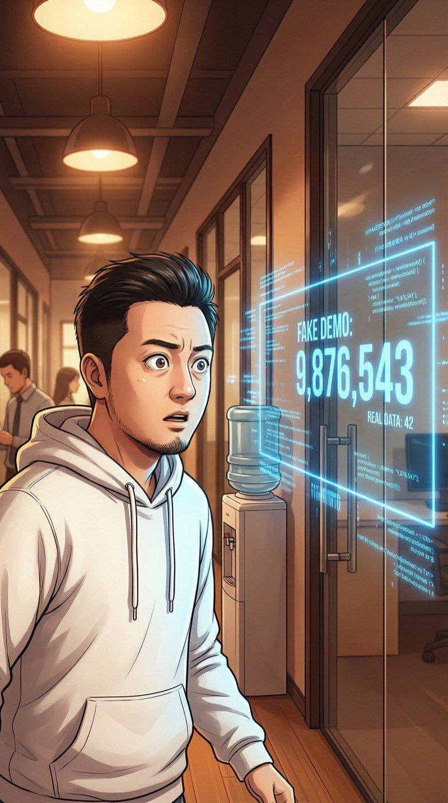
去茶水间倒水，路过同层另一家公司的玻璃门——代码视觉让我看到了他们的内部系统。
这……这也太离谱了吧。日活100万，实际只有800？看到不该看的了。
我赶紧移开视线。
必须给代码视觉设个规矩：不主动偷看别人系统。除非——涉及公共安全。对，就像今天咖啡馆那样。
回到工位，代码视觉看向自己的产品代码——所有架构问题、性能瓶颈、潜在bug全部高亮显示。
我以前花三天debug的东西……现在一秒钟就能看到。
打开竞品APP，代码视觉透视其架构——他们引以为傲的"AI推荐引擎"，其实只是简单的协同过滤加了层皮。
所以……我能看到所有人的技术底牌。这比任何商业情报都值钱。但我不用来偷——我用来学习，然后做得比他们好十倍。
傍晚。小陈收拾东西准备走。
小陈："江哥，你今天状态怎么这么好？早上还一脸死人样，下午连修了我们产品的四个bug。"
我："可能……昨晚那一炸，炸通了我的任督二脉？"
小陈翻了个白眼："你是程序员不是武林高手。"
小陈走后，空荡荡的办公室。我打开记事本，开始写——
每一种超能力都有边界。找到边界，才能找到最优解。这是黑客的第一课。
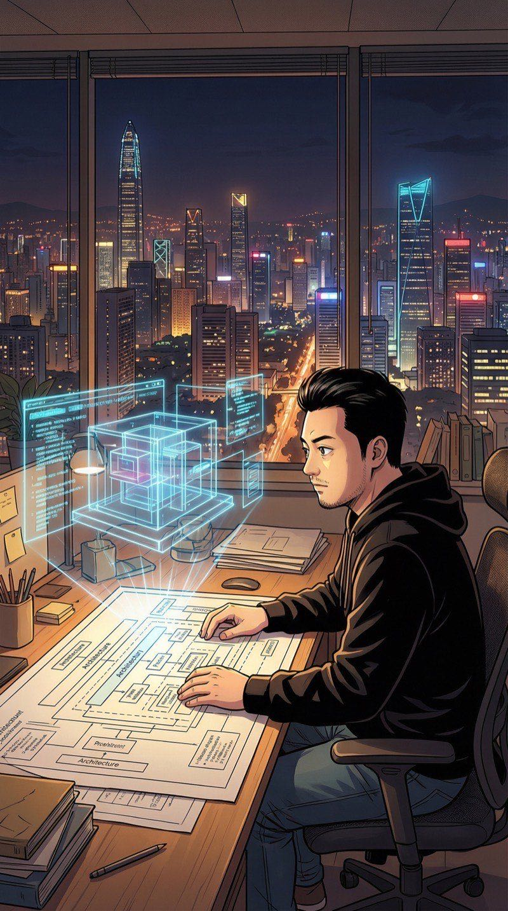
深夜11点。窗外深圳夜景灯火通明。
用代码视觉重新审视我们的产品……原来之前的架构完全是错的。不是修bug能救的，需要推翻重写。
代码视觉让我能直接"看到"数据流走向，像玩3D建模一样搭建系统架构。效率是以前的50倍。
新架构快速成型。白板上画满了全新的推荐系统设计。
以前要一个团队干两周的活儿，我一个晚上搞定。创业最大的成本是人力？不，是看不到问题在哪。
习惯性地看向窗外——代码视觉突然捕捉到一个异常信号。
3公里外，之前那个收集咖啡馆信用卡数据的攻击者，正在对另一个目标发起攻击。而且这次目标更大——
他们……没有停。他们在攻击银行。
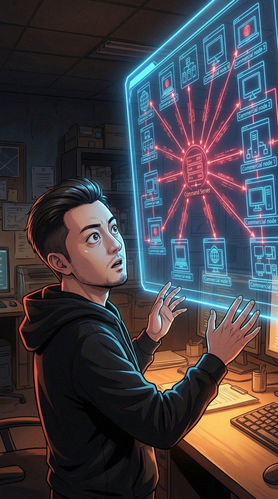
代码视觉展开攻击者的数据流全貌——这不是个人黑客，是一个组织化的APT团队。在深圳至少入侵了12个商业网点。
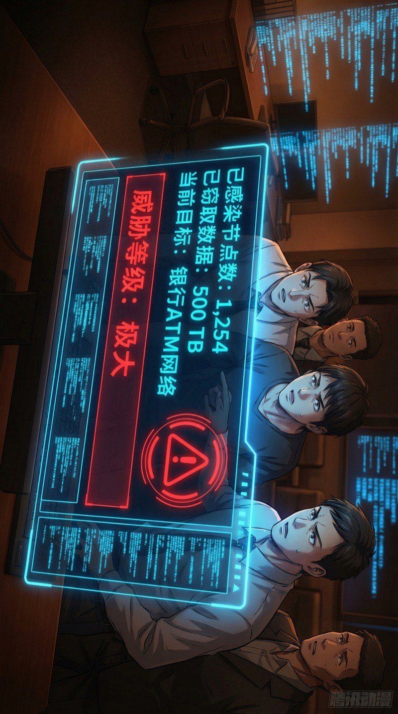
拳头握紧。
50000条信用卡……这不是小打小闹了。今天的咖啡馆只是冰山一角。
我开始敲代码——同时用代码视觉实时追踪攻击者的数据流。双线作战：手动操作+视觉追踪。
昨天还是负债200万的失败创业者……今天开始打网络犯罪了。人生的剧本我看不到，但至少这些代码，我现在看得清清楚楚。
追踪数据流到攻击者服务器——突然，屏幕上弹出一行文字。
不是代码。是人类打的字。
……他发现我了。